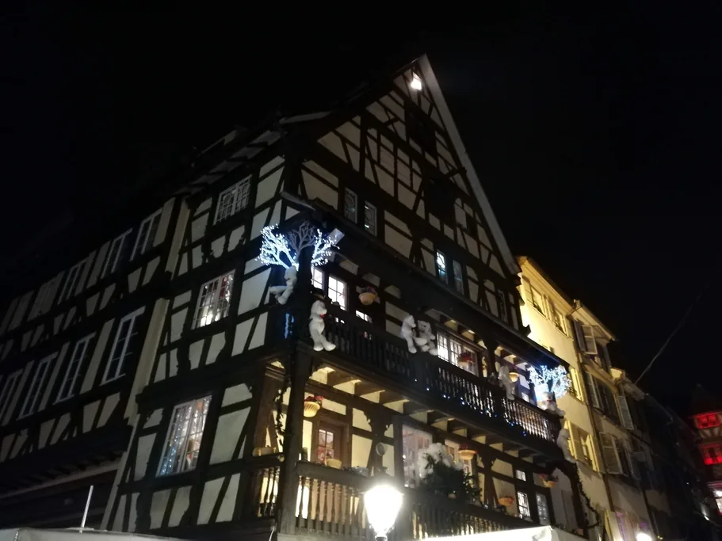
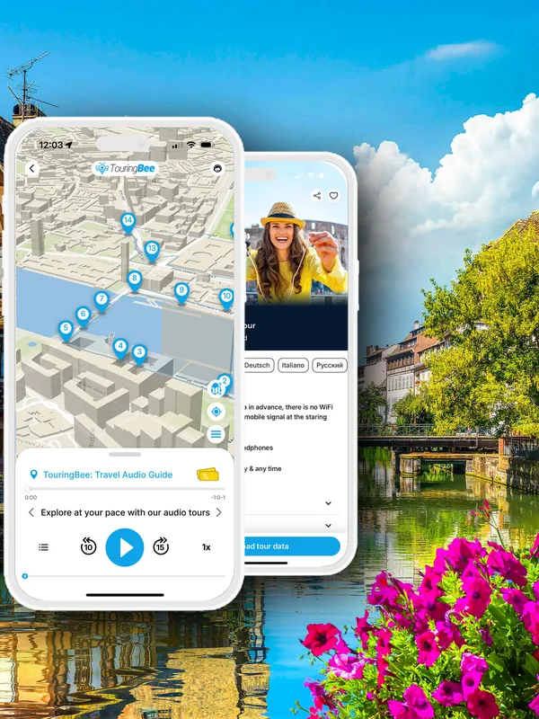

Nuestro punto de referencia será Estrasburgo. Conocemos bien la ciudad: hemos creado una audioguía de TouringBee de 33 paradas por su centro histórico. TouringBee también ofrece audioguías en varias otras ciudades de esta comparativa. Pero Estrasburgo no gana en todas las categorías, y donde pierde, lo diremos.
De cada ciudad encontrará su carácter, sus fechas de 2026 y el tipo de viajero al que le conviene. Además, combinaciones de ciudades que puede visitar en un mismo viaje. Si ya se inclina por Estrasburgo, tiene todos los detalles en nuestra guía completa de la ciudad. Aquí comparamos sus mercados navideños con los de otras ciudades europeas.
De un vistazo
Fechas de los principales mercados en 2026
| Ciudad | Mercado principal | Fechas 2026 |
|---|---|---|
| Estrasburgo | Christkindelsmärik, una docena de plazas | Abre el viernes 27 de noviembre. Fecha de cierre aún sin anunciar |
| Colmar | Seis mercados en el casco antiguo | 23 de noviembre – 29 de diciembre |
| Colonia | Mercado de la catedral, Roncalliplatz | 16 de noviembre – 23 de diciembre |
| Núremberg | Christkindlesmarkt, Hauptmarkt | 27 de noviembre – 24 de diciembre |
| Viena | Christkindlmarkt, Rathausplatz | 13 de noviembre – 26 de diciembre |
| Praga | Plaza de la Ciudad Vieja y plaza de Wenceslao | 28 de noviembre de 2026 – 6 de enero de 2027 |
| Budapest | Advent Bazilika, plaza de San Esteban | 13 de noviembre de 2026 – 1 de enero de 2027 |
| Zúrich | Polarzauber, vestíbulo de la estación central | 19 de noviembre – 24 de diciembre |
Las fechas corresponden al mercado principal de cada ciudad y, en el caso de Colmar, a sus seis mercados del casco antiguo. En la mayoría de estas ciudades hay más mercados, cada uno con su propio calendario. Los horarios del 24 al 26 de diciembre cambian a menudo, así que conviene comprobar esos tres días con antelación. En los últimos años, el mercado de Estrasburgo cerró el 24 de diciembre.
¿Cuál es el mercado navideño más antiguo?
Cuando se habla de la antigüedad de los mercados navideños, el marketing suele tomarse demasiadas libertades con los hechos. Por eso vale la pena ver qué puede demostrar realmente cada ciudad.
Estrasburgo fecha su mercado en 1570. Ese año, el consejo protestante de la ciudad sustituyó la antigua feria de San Nicolás por un mercado dedicado al Niño Jesús, el Christkindelsmärik. Es el mercado navideño más antiguo de Francia, y nadie le discute el título. Pero no es el más antiguo de Europa.
En Alemania, Bautzen y Dresde se disputan el título desde hace tiempo. El Wenzelsmarkt de Bautzen se remonta a 1384. Ese año, el rey Venceslao IV concedió a la ciudad el derecho a celebrar un mercado de carne que con el tiempo se convirtió en navideño. El Striezelmarkt de Dresde aparece por primera vez en una carta de 1434. En 2015, un instituto alemán de récords zanjó la disputa y dio el título a ambos, con matices: a Bautzen, como el más antiguo citado en una crónica, y a Dresde, como el más antiguo documentado en una carta.
El mercado de Núremberg resultó ser más joven de lo que se creía. La prueba fiable más antigua es una pequeña caja de pino. Su inscripción menciona un regalo enviado «al Kindles-Marck». Durante décadas se leyó en ella el año 1628. En 2025, el archivo municipal y el Germanisches Nationalmuseum compararon los nombres de la caja con los registros de la ciudad. Conclusión: la inscripción es de 1678. El famoso mercado rejuveneció cincuenta años de la noche a la mañana.
La supuesta historia medieval del mercado navideño de Viena no se sostiene, y la propia ciudad lo admite. La idea de un mercado de siete siglos se basa en derechos de mercado confirmados en 1296. Permitían ferias, pero ninguna tenía que ver con la Navidad. En su propia historia, el Ayuntamiento de Viena señala que las cuentas de la época no muestran rastro de un mercado navideño medieval. Unas crónicas de 1626 mencionan casetas de panaderos en el Graben, y un mercado de San Nicolás y de Navidad aparece en la Freyung en 1764.
En resumen: Estrasburgo tiene el mercado navideño más antiguo de Francia, no de Europa. Otras ciudades tienen pruebas más antiguas. Lo que ofrece Estrasburgo es una tradición desde 1570 en un centro histórico que merece el viaje más allá del mercado.
Las grandes ciudades: Colonia, Viena y Núremberg
Los grandes mercados navideños suelen asociarse a las grandes ciudades. Pero incluso entre ellas, cada uno tiene su propio carácter.
Colonia
De todas las ciudades de esta comparativa, Colonia ofrece seguramente la mayor variedad: la lista oficial de la ciudad para 2026 incluye trece mercados. La mayoría está dentro del antiguo cinturón de bulevares, y algunos quedan a diez minutos a pie unos de otros. El más conocido se extiende al pie de la catedral, en la Roncalliplatz, con más de 120 puestos. El 22 de noviembre estará cerrado por el Totensonntag, el domingo alemán de recuerdo a los difuntos. Entre mercado y mercado, puede recorrer el casco antiguo de Colonia con una audioguía de TouringBee que une la catedral y las calles históricas.
El mercado que más dura tras la Navidad es Heinzels Wintermärchen, en el casco antiguo. Su parte en el Heumarkt, con una pista de patinaje en el centro, abre hasta el 10 de enero de 2027, pero cierra el 24 y el 25 de diciembre. La parte vecina, en el Alter Markt, termina el 23 de diciembre. Colonia conviene a quien quiera visitar muchos mercados distintos sin largas caminatas cuesta arriba. También es una buena opción para viajar la primera semana de enero.
Viena
Viena ofrece uno de los escenarios más majestuosos. El Christkindlmarkt ocupa la Rathausplatz, frente al ayuntamiento neogótico. Abre todos los días de 10:00 a 22:00 y cierra a las 18:30 el 24 de diciembre. El mercado principal termina el 26 de diciembre, pero la ciudad no se vacía: los mercados del palacio de Schönbrunn y de la Riesenradplatz, en el Prater, siguen hasta el 6 de enero, igual que la pista de hielo frente al ayuntamiento. Los mercados más pequeños de la Freyung y del barrio de Spittelberg son más tranquilos que el principal y más agradables para comprar. Viena conviene a quien quiera combinar mercados navideños con una noche de ópera y algunos museos.
De día, puede descubrir el centro histórico con la audioguía de TouringBee y volver a los mercados por la noche. Si quiere ver algo más que el principal, consulte nuestra guía de los mercados navideños de Viena: describe cada recinto, con sus fechas y su carácter.
Núremberg
Núremberg es una de las mejores opciones para quien busca un mercado navideño alemán tradicional. En 2025, el mercado del Hauptmarkt tenía 168 casetas de madera con techos de tela roja y blanca, todas del mismo modelo. El propio mercado se describe como Städtlein aus Holz und Tuch, «la pequeña ciudad de madera y tela». Esa uniformidad es buena parte de su encanto: se percibe como un solo conjunto, no como cien letreros que compiten entre sí. El mercado abre el 27 de noviembre. A las 17:30, el Christkind lee por tradición el prólogo desde el balcón de la Frauenkirche. El 24 de diciembre cierra a las 14:00. Espere pan de jengibre y ángeles de pan de oro, no atracciones.
Pero el mercado es solo una pequeña parte del casco antiguo. Para ir más allá del Hauptmarkt y entender mejor la historia de Núremberg, puede recorrer la ciudad con nuestra audioguía por Núremberg.
Estrasburgo: un gran mercado en un centro compacto

Estrasburgo no destaca por tener el mayor número de puestos: unas 300 casetas se reparten por una docena de plazas. La mayoría está en la Grande Île, una isla histórica de cerca de un kilómetro de ancho, declarada Patrimonio Mundial por la UNESCO. Los mercados están tan cerca unos de otros que en una tarde puede recorrer varias plazas a pie, sin tranvía. Esa misma densidad explica las aglomeraciones: según el ayuntamiento, la temporada navideña de 2025 atrajo a unos 3,05 millones de visitantes. Nuestra guía del mercado navideño de Estrasburgo le lleva plaza por plaza, con consejos sobre qué comer y cómo moverse entre la multitud.
De día, antes de pasear por las plazas navideñas iluminadas, puede conocer el propio Estrasburgo. La audioguía de TouringBee le lleva por el centro histórico, junto a la catedral, la Petite France y los Ponts Couverts.

Audioguía de Estrasburgo por libre Acceso inmediato
Los más pintorescos: Colmar y los pueblos de Alsacia
En Estrasburgo y las demás grandes ciudades, los mercados están rodeados de piedra gris y aceras mojadas de diciembre. En los pueblos alsacianos, el ambiente es muy distinto. Desde Estrasburgo suele haber una hora en coche, y desde Colmar la mayoría queda a entre 10 y 25 minutos.
Colmar tiene seis mercados repartidos por su casco antiguo, desde la iglesia de los Dominicos hasta los canales de la Pequeña Venecia. Abren el 23 de noviembre, cuatro días antes que Estrasburgo, y siguen hasta el 29 de diciembre. En los últimos años, el mercado de Estrasburgo cerró antes. Un mercado gastronómico aparte, en la Rue de la Montagne Verte, dura hasta el 3 de enero de 2027. Entre mercado y mercado, puede recorrer el casco antiguo con la audioguía de TouringBee por Colmar. Nuestra guía de los mercados navideños de Colmar explica qué distingue a cada uno de los seis y en qué orden conviene visitarlos.
Los pueblos vinícolas de los alrededores de Colmar tienen sus propios mercados navideños, y sus calendarios varían más de lo que cabría esperar:
| Pueblo | Fechas 2026 |
|---|---|
| Riquewihr | 27 de noviembre – 20 de diciembre |
| Kaysersberg | Solo de viernes a domingo, 27 de noviembre – 20 de diciembre |
| Eguisheim | 27 de noviembre – 23 de diciembre y 27–30 de diciembre (cerrado del 24 al 26 de diciembre) |
| Ribeauvillé | Mercado medieval, 5–6 y 12–13 de diciembre |
Riquewihr se alza dentro de sus murallas medievales. Su calle principal, flanqueada por casas de entramado de colores, sube hasta una torre-puerta. En Eguisheim, las callejuelas forman anillos alrededor del castillo, y el mercado navideño sigue ese trazado tan particular. Kaysersberg es el pueblo alrededor del cual hay que organizarse: un martes encontrará un pueblo precioso y ni un solo puesto. Ribeauvillé es la excepción, con disfraces y fuego solo dos fines de semana. Pero pequeño no significa vacío. El ayuntamiento de Ribeauvillé presenta su mercado como uno de los más visitados de Alsacia y restringe el tráfico los días de mercado. Kaysersberg también se llena los fines de semana de Adviento.
Sin coche también se puede llegar a los mercados de los pueblos, pero hay que ajustarse a los horarios. Lanzaderas, autobuses, trenes y las fechas de cada mercado están reunidos en nuestra guía de los mercados navideños cerca de Colmar.
Praga y Budapest
Ambas ciudades están fuera de la zona euro, y el viaje puede salir relativamente barato. Eso sí, los precios de hoteles y comida cerca de los grandes mercados suben bastante en temporada navideña.
En Praga, los mercados navideños siguen en enero. Los de la plaza de la Ciudad Vieja y la plaza de Wenceslao abren el 28 de noviembre y duran hasta el 6 de enero de 2027. Praga es, por tanto, una buena opción si no puede viajar antes de Navidad. La plaza de la Ciudad Vieja, con las dos torres de la iglesia de Týn detrás del árbol, es una de las escenas de mercado más fotografiadas de Europa. Los primeros veinte minutos allí impresionan de verdad. Pero salga de la plaza y camine unas calles: la multitud se dispersa. Para descubrir el casco antiguo de Praga más allá de los mercados navideños, puede recorrerlo durante el día con una audioguía de TouringBee.
En Budapest, los dos mercados principales están a diez minutos el uno del otro. Advent Bazilika, frente a la basílica de San Esteban, abre el 13 de noviembre y dura hasta el 1 de enero de 2027. Al anochecer, un espectáculo de luces ilumina la fachada. El mercado más antiguo, en la plaza Vörösmarty, apuesta por la artesanía húngara en lugar de adornos importados. Budapest merece la pena si busca una alternativa más asequible a las caras ciudades de Europa occidental. Y un día frío termina muy bien en uno de sus baños termales. Si quiere conocer Budapest más allá de los mercados navideños, puede recorrer la ciudad con la audioguía de TouringBee.
Zúrich: un mercado a cubierto
El mercado principal de Zúrich está a cubierto, en el gran vestíbulo de la estación central. Ahora se llama Polarzauber y reúne más de 100 puestos con decoración polar, del 19 de noviembre al 24 de diciembre. No es habitual encontrar un mercado navideño a cubierto, algo que se agradece especialmente en los días lluviosos de diciembre. Zúrich es una ciudad cara, así que encaja sobre todo con quien ya tiene Suiza en su itinerario.
Dos mercados, un solo viaje
Cuando dos ciudades están cerca, puede ver dos mercados navideños en un viaje sin perder demasiado tiempo en los desplazamientos. Estas son algunas combinaciones de ciudades y pueblos que funcionan bien juntas.
Estrasburgo y Colmar: un día, sin coche. El tren tarda unos 30 minutos (horarios y precios). Pase unas horas en el casco antiguo de Colmar y en sus mercados, y vuelva a Estrasburgo para las luces de la noche. Los mercados de Colmar siguen abiertos hasta el 29 de diciembre, más tiempo que el mercado de Estrasburgo en los últimos años. Si aun así tiene que elegir una de las dos, le ayudará nuestra comparativa Colmar o Estrasburgo en Navidad.
Colmar y los pueblos vinícolas: un día, en coche. Riquewihr, Kaysersberg y Eguisheim están a menos de veinte minutos entre sí. Organice el día en función de los fines de semana de Kaysersberg y del cierre temprano de Riquewihr el 20 de diciembre, no en función de Colmar.
Colonia y Aquisgrán: media jornada o un día desde Colonia. Los trenes más rápidos tardan una media hora. El mercado de Aquisgrán se celebra del 20 de noviembre al 23 de diciembre alrededor del ayuntamiento y de la catedral de Carlomagno, y solo la catedral ya justifica el viaje.
Praga y Viena: dos capitales en una semana. El tren directo tarda unas cuatro horas. Los mercados de Viena abren el 13 de noviembre y los de Praga el 28 de noviembre, así que a principios de diciembre ambas están en plena actividad.
¿Qué mercado navideño elegir para un primer viaje en diciembre?
El tiempo y la luz del día importan tanto como el propio mercado. De los mercados principales de esta comparativa, solo el Polarzauber de Zúrich está a cubierto, los demás son al aire libre. En Praga, Viena y Budapest es más fácil esperar a que pase la lluvia en un museo, un café o un baño termal. En diciembre anochece pronto en todas estas ciudades, a menudo hacia las 16:00 o las 16:30. La tarde es para el mercado, y el resto del día, para la ciudad.
- El clásico, todo a pie – Estrasburgo, con Colmar a media hora. La contrapartida son las aglomeraciones.
- La mayor variedad sin caminar mucho – Colonia.
- Los escenarios más pintorescos – Colmar y los pueblos de Alsacia.
- Un mercado alemán tradicional – Núremberg.
- Una gran ciudad con un mercado a su altura – Viena.
El 26 de diciembre, el mercado principal de Viena sigue abierto. Después quedan Praga, Budapest (hasta el 1 de enero), Colmar, el Heumarkt de Colonia y los mercados más pequeños de Viena.
Antes de reservar
- La entrada a todos los mercados principales de esta lista es gratuita. Las visitas guiadas, el patinaje, las atracciones y los eventos especiales pueden tener coste.
- Trenes desde París. Los trenes de alta velocidad directos de París-Este a Estrasburgo tardan desde 1 h 45 min (horarios y precios).
- Los hoteles de Estrasburgo son mucho más caros de lo habitual en diciembre, y las habitaciones se agotan con meses de antelación (consultar disponibilidad).
¿Prepara su viaje de Navidad?
Si tuviéramos que recomendar una sola ruta: Estrasburgo la primera semana de diciembre y un día aparte en Colmar. Las dos ciudades están a solo media hora en tren. De día, pasee por los barrios históricos, y al anochecer, vaya a los mercados. Si viaja después de Navidad, Praga es una opción especialmente buena, y el mercado principal de Budapest sigue abierto hasta el 1 de enero.
Preguntas frecuentes
¿Qué es mejor, Estrasburgo o Colonia?
Estrasburgo es mejor para un entorno compacto e histórico, con la catedral y los mercados navideños reunidos en la Grande Île. Colonia ofrece más mercados y una temporada más larga, así que es la mejor opción si quiere recorrer muchos mercados distintos. Colonia tiene trece mercados en su lista de 2026. El primero abre el 16 de noviembre, y el del Heumarkt sigue hasta el 10 de enero de 2027. El mercado de Estrasburgo, por su parte, se remonta a 1570.
¿Cuál es el mercado navideño más antiguo de Europa?
El mercado de Estrasburgo es el más antiguo de Francia, pero no de Europa. Existe desde 1570. En Alemania, Bautzen remonta su mercado a 1384, y el Striezelmarkt de Dresde, a una carta de 1434. La prueba fiable más antigua del mercado de Núremberg es solo de 1678, y los historiadores del Ayuntamiento de Viena desmienten la leyenda medieval sobre el suyo.
¿Cuándo es el mercado navideño de Núremberg en 2026?
Del 27 de noviembre al 24 de diciembre de 2026, en el Hauptmarkt. Normalmente abre todos los días de 10:00 a 21:00, hasta las 22:00 el día de la inauguración y hasta las 14:00 el 24 de diciembre. El prólogo tradicional del Christkind es el 27 de noviembre a las 17:30.
¿Qué mercados navideños siguen abiertos después de Navidad?
Los dos mercados principales de Praga duran hasta el 6 de enero de 2027, Advent Bazilika en Budapest hasta el 1 de enero, los seis mercados de Colmar hasta el 29 de diciembre y su mercado gastronómico hasta el 3 de enero. En Colonia, el mercado del Heumarkt reabre después de Navidad y sigue hasta el 10 de enero. En Viena, el mercado de la Rathausplatz cierra el 26 de diciembre, pero los de Schönbrunn y la Riesenradplatz siguen abiertos hasta el 6 de enero.
Para seguir leyendo
- El mercado navideño de Estrasburgo – plaza por plaza, qué comer y cómo moverse entre la multitud
- Colmar o Estrasburgo en Navidad – qué ciudad elegir para un viaje corto
- Mercados navideños cerca de Colmar – los pueblos de Alsacia, lanzaderas y trenes
- Estrasburgo en invierno – las semanas más tranquilas antes y después del mercado
Las audioguías de TouringBee son nuestro propio producto. Los enlaces a Booking.com y SNCF son enlaces de afiliado: si reserva a través de ellos, podemos recibir una pequeña comisión sin coste adicional para usted. Esto nunca influye en nuestras recomendaciones.